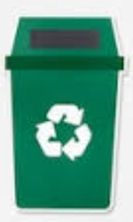
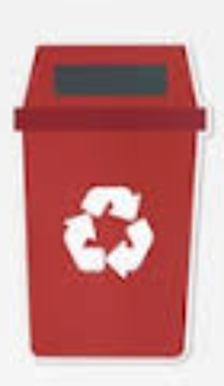
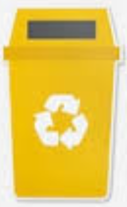

A reciclagem é uma forma de reaproveitamento das matérias primas que são descartadas. Nesse sentido, reciclar significa diminuir a quantidade de resíduos provenientes dos produtos pelo homem.
Existem postos de reciclagem que servem para a separação dos resíduos, e podem estar dispostos em lixeiras com diferentes cores. As principais são:  Azul:Destinado aos papéis e papelões.
Azul:Destinado aos papéis e papelões.
Azul:Destinado aos papéis e papelões.Verde:Destinado aos vidros.
Vermelho:Destinado aos plásticos.
Amarelo:Destinado aos metais.